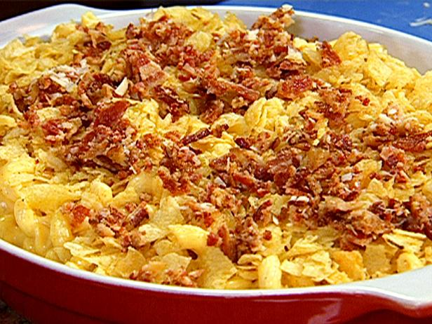

Macaroni and Cheese

- Prep Time: 15 min
- Cook Time: 15 min
- Total Time: 1 hr 5 min
- Yeild: 6 servings
Ingredients
- 6 tablespoons butter
- 1/2 cup all-purpose flour
- 5 cups milk, warm
- 1 teaspoon dry mustard
- 1/4 teaspoon freshly grated nutmeg
- 1/4 teaspoon cayenne pepper
- Dash salt and freshly ground black pepper
- Dash hot sauce
- Dash Worcestershire sauce
- 1 pound cavatappi pasta, cooked al dente
- 1 cup crushed potato chips
- 5 slices cooked bacon, crumbled
- 1/2 cup freshly grated Parmesan, for topping
Directions
- Heat oven to 350 degrees F.
- Melt 6 tablespoons butter in a large sacepot over medium heat. Add flour
and cook, stirring, for one minte. Whisk in the warmed milk and bring to a
boil, continue to whisk constantly. The mixture will thicken as the heat
increases. Continue to stir while adding
- the dry mustard, nutmeg, ceyanne, salt pepper, hot sauce and Worcestershire.
Stir in the three cups of Cheddat until it melts.
-
Pour the cheese sauce over the noodles and add to a 3 quart casserole dish.
- Sprinkle the chips, bacon and Parmesan on top and bake for 35 minutes.